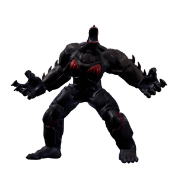

Abaddon
背景

顶级法力捕食者。Manalyte 是一种完全由维度门地下城内死者遗体吸收的法力构成的生物。它们极具攻击性，并且由于每次成长都需要更多法力，寿命通常很短。它们通常出现在地下城中层，栖息并游荡于环境法力水晶浓度较高的区域。
观察表明，在演化后期，被称为“elder”的 Manalyte 往往会互相争斗，有时甚至相互吞食，以获得更大的质量和法力容量。Sables Guild 小队旅行期间，在下层观察到一群 elder manalyte 狂奔，仿佛在逃离什么。该公会的资源收集团队接近这场奔逃后的现场检查残骸时，主队附近的另一名侦察员听到一连串尖叫，随后是突然的寂静和嘎吱声。当主队查看收集团队时，迎接他们的是纯粹血肉横飞的场景，以及一个看似建筑物大小的怪物。远距离检查后，小队研究员将这个怪物分类为“Abaddon”，因为它的狩猎方式似乎是在地下城中打开裂缝，抓住其他 elder manalyte 进行吞食。从一份皮肤样本判断，这个怪物可能已有 20000 多岁，并且异常耐打。
Albatross Kingdom 后来一支专门法师队伍的报告指出，该生物能够抵抗 10 阶法术，而这种法术本可在几秒内夷平整个王国。对它来说，那些法术仿佛只是星期二的热水澡。进入下层法力水晶补给区时，Holy 元素法师已成为必要配置，因为神圣魔法似乎能驱散大多数生物，并减少与该异常体的遭遇。
新冒险者队伍已被警告：一旦发现这个怪物，应立即撤退并向公会报告。
“它凭空出现，杀戮、吞食，就像已经饿了一千年。”
- Sables Guild 会长 Jeremy。
策略
Abbadon 是巨大的 Manalyte，会召唤最多 3 个 Elder Manalyte 与它并肩作战。它会施放大型 AoE 攻击，产生火柱和火球，以及可对对手施加 decay 的黑暗球体。
死亡后，Abbadon 会蜕皮并进入第二阶段。此时它可召唤的 Manalyte 最大数量增加到 6 个。它大多数攻击现在会穿透对手防御，并拥有更大的半径。最具毁灭性的招式是吞没战场大部分区域的冲击波。
统计
基础 HP：32000
伤害：物理和暗影
该 Boss 由两个阶段组成。
| 属性 | 抗性 |
|---|---|
| 物理 | 中性 (1x) |
| 火焰 | 抗性 (0.5x) |
| 冰霜 | 弱点 (0.5x) |
| 电击 | 抗性 (0.5x) |
| 光耀 | 弱点 (1.75x) |
| 暗影 | 中性 (1x) |
| 毒 | 抗性 (0.5x) |